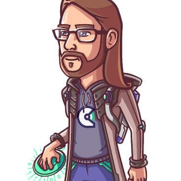

dharma · your right action ✦ gift · handed to you
10 adventurers wanted, to walk the path together.
· until the fire is lit ·
you already carry a sense of what's yours to do. it goes quiet under the noise of ordinary weeks — and alone, the noise usually wins.
in a circle of ten, it can't. you sit down, you write, you say the true thing out loud. watch — the other tents are waking.
week by week, you get more honest. nine people learn your patterns, hear your excuses, and hand back what you actually said — the reflection a notebook can't give you.
that's the gift: not answers — the conditions in which your right action gets handed to you.

ten of you, close to the warmth · five guest instructors, one per session — named as the fire is lit · and a couple of surprises.
dates, seats, cost — they're all set.
the camp is woven.
one seat is yours, if you want it.
ten seats. when they're taken, they're taken.
money shouldn't be the wall — financial sponsorship is available, right in the application.
everything the cohort walks is free and open on this site — the inquiry is right there, and no one will stop you.
but know what going alone means: you bring the reading discipline, you build the structure as your inquiry deepens, and you make your own feedback loops. off-roading is real walking — and the cohort is the paved road back, whenever you want it.
not sure yet? come sit with the others first — 💬 join the telegram